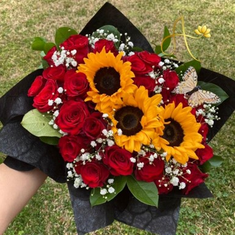
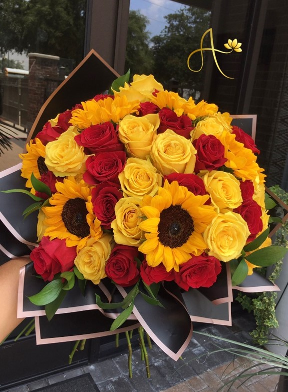

Floristería Astrid se compromete a ofrecer un excelente servicio al cliente, brindándole la mejor atención, calidad y puntualidad, de forma tal que cumplamos con éxito y satisfacción sus compromisos.

Somos una floristería el cual mantiene el espíritu por el arte floral para decorar y expresar momentos y sentimientos con una filosofía de diseño muy marcada por la naturaleza porque no hay forma más hermosa de decir algo que con flores.
Floristería Astrid se compromete a ofrecer un excelente servicio al cliente, brindándole la mejor atención, calidad y puntualidad, de forma tal que cumplamos con éxito y satisfacción sus compromisos.
Ser una empresa líder en el sector de floristerías a nivel nacional e internacional, brindando a nuestros clientes productos y servicios de la mejor calidad, velando siempre por el bienestar de nuestros colaboradores, clientes y proveedores.
